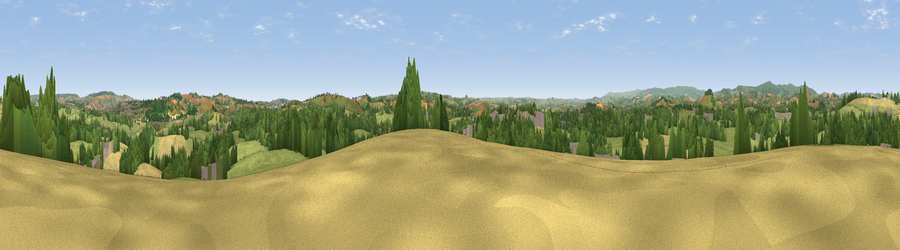

Viewpoint near Ipplepen
#15897 in England · top 33% of its area beats it · near IpplepenThe view, rendered

A 360° render of this exact spot computed from the terrain model, tree cover and land cover — summer colours, afternoon light, calibrated against photographs of famous viewpoints. Real trees, hedges and buildings will differ in detail.
The panorama
Grey silhouette: terrain skyline in each direction (720 bearings, Earth curvature and refraction included). Dashed green: skyline with trees (+15 m) and buildings (+8 m) as obstacles. Blue strip: how far the ground is visible on each bearing.
Where the view opens
Wedge length = distance to the farthest visible ground on that bearing (vegetation-aware). Rings at 10, 25 and 50 km.
What fills the view
57% grassland · 23% woodland · 16% cropland · 4% built-up
Angular shares of the visible panorama (visual magnitude), not map area. Landscape diversity 0.47 (0–1 Shannon).
Key numbers
More beautiful places nearby
The staircase of upgrades: each row has a higher view potential than everything closer. Driving times are estimates from straight-line distance, calibrated against real road routing — check an actual route before setting out.
| Place | Direction | Drive | Score |
|---|---|---|---|
| Viewpoint near Denbury | WNW · 3 km | ~8 min | 58.6 |
| Viewpoint near Kingskerswell | ESE · 4 km | ~9 min | 61.5 |
| Viewpoint near Marldon | SE · 4 km | ~9 min | 72.3 |
| Beacon Hill | SSE · 6 km | ~13 min | 82.3 |
| Viewpoint near Stokeinteignhead | ENE · 8 km | ~16 min | 84.1 |
| High Peak | NE · 31 km | ~49 min | 85.3 |
| Golden Cap | ENE · 61 km | ~83 min | 88.7 |
| The Knoll | ENE · 71 km | ~95 min | 91.0 |
50.49840, -3.62669 · source: screening · position refined by local search. Computed location — check access rights before visiting.